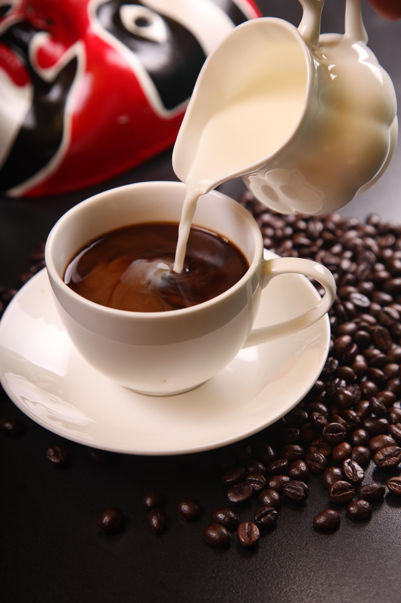
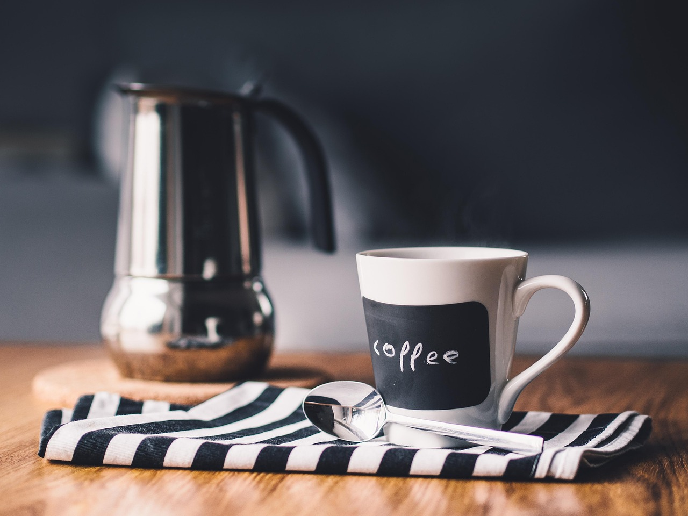

El café no solo es delicioso, también aporta beneficios para tu bienestar diario.
Calidad, aroma y tradición en cada taza. Nuestro café y té están seleccionados para acompañar tus mejores momentos.